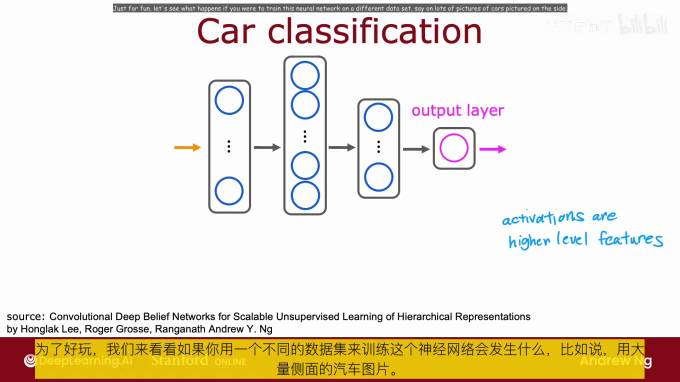
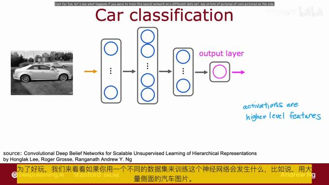
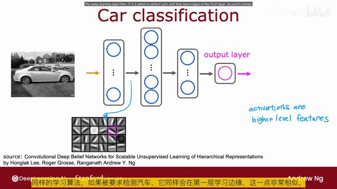
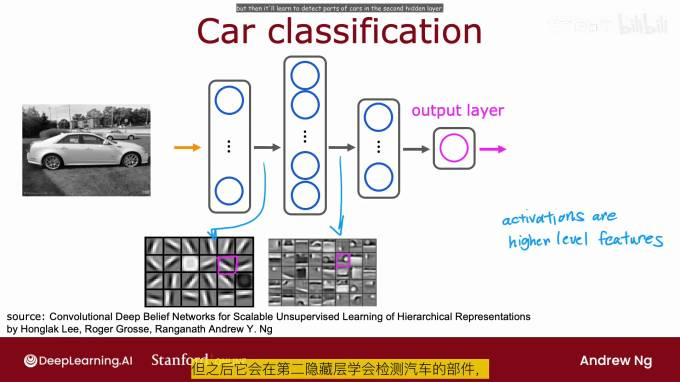
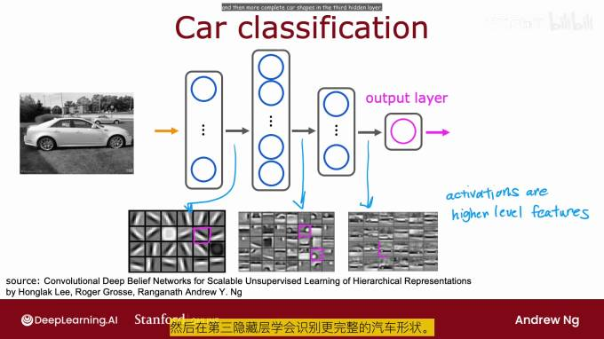

上个视频中，你看到了神经网络在需求预测示例中是如何工作的。00:02
我们来看看如何将类似的想法应用到计算机视觉应用中。00:08
如果你想构建一个人脸识别应用，你可能想训练一个神经网络，它的输入是这样一张图片，并输出图片中人物的身份。00:16
这张图片是一千乘一千像素的，所以它在计算机中的表示实际上是一个一千乘一千的网格，或者也叫作一千乘一千的像素强度值矩阵。n。00:28
在这个例子中，我的像素强度值或像素亮度值范围从零到二百五十五，所以这里的一百九十七是图像最左上角那个像素的亮度。00:45
一百八十五是旁边一个像素的亮度，以此类推，一直到二百一十四将是这张图片右下角的亮度。00:59
如果你把这些像素强度值取出来，展开成一个向量，你最终会得到一个包含一百万个像素强度值的列表或向量。01:10
一百万个，因为一千乘一千的平方得到一百万个数字。01:24
所以人脸识别问题就是：你能否训练一个神经网络，它接收一个包含一百万个像素亮度值的特征向量作为输入，并输出图片中人物的身份？。01:30
那么，你可能会这样构建一个神经网络来执行这个任务。01:44
输入图像 X 被馈送到这一层神经元。01:50
这是第一个隐藏层，然后它会提取一些特征。01:55
接着，第一个隐藏层的输出被馈送到第二个隐藏层。02:00
那个输出再被馈送到第三个隐藏层。02:06
最后到达输出层，然后输出层会估算，比如说，这张图片是某个特定人物的概率。02:10
一件有趣的事情是，如果你观察一个已经在大量人脸图像上训练好的神经网络，并试图可视化这些隐藏层在试图计算什么，你会有所发现。02:19
事实证明，当你在大量人脸图片上训练这样一个系统，并窥视隐藏层中不同的神经元，以弄清楚它们可能在计算什么时，你可能会发现以下情况。02:31
在第一个隐藏层，你可能会发现一个神经元在寻找像这样的短竖线或垂直边缘。02:45
第二个神经元在寻找像那样一条定向的线或定向的边缘。02:54
第三个神经元在寻找那个方向的线条，依此类推。03:00
所以，在神经网络的最初几层，你可能会发现这些神经元在寻找图像中非常短的线条或非常短的边。03:06
如果你观察下一个隐藏层，你会发现这些神经元可能学会了将许多短线条或短边缘片段组合在一起，以寻找面部的各个部分。n。03:16
比如，这里每一个小方框都是该神经元试图检测内容的可视化展示。03:31
那么，这第一个神经元看起来像是在试图检测，在图像的某个位置是否存在一只眼睛。03:38
第二个神经元看起来像是在试图检测鼻子的边角。03:47
也许这边的这个神经元是在试图检测耳朵的底部。03:52
然后，随着你看到下一个隐藏层，在这个例子中，神经网络正在聚合面部的不同部分，然后试图检测是否存在更大、更粗略的脸部形状。03:58
最后，通过检测面部与不同脸型的吻合程度，创建出一组丰富的特征，进而帮助输出层确定图片中人物的身份。04:12
神经网络的一个非凡之处在于，它能够完全自行学会这些位于不同隐藏层的特征检测器。04:27
在这个例子中，从来没有人告诉它要在第一层寻找短小的边缘，在第二层寻找眼睛、鼻子和面部部件，然后在第三隐藏层寻找更完整的面部形状。N。04:35

神经网络能够完全自行从数据中弄清楚这些事情。04:50
只需注意一点：在这个可视化中，第一个隐藏层中的神经元被展示为查看相对较小的窗口来寻找这些边缘。04:54
然后第二个隐藏层查看更大的窗口，第三个隐藏层查看的窗口还要更大。05:06
所以，这些小神经元的可视化实际上对应着图像中不同大小的区域。05:14
为了好玩，我们来看看如果你用一个不同的数据集来训练这个神经网络会发生什么，比如说，用大量侧面的汽车图片。05:22


同样的学习算法，如果被要求检测汽车，它同样会在第一层学习边缘，这一点非常相似，但之后它会在第二隐藏层学会检测汽车的部件，然后在第三隐藏层学会识别更完整的汽车形状。05:33



所以，仅仅通过输入不同的数据，神经网络就会自动学会检测截然不同的特征，以便尝试完成汽车检测、人物识别或任何它所训练的特定任务的预测。05:54
那么，这就是神经网络的工作方式。06:14
用于计算机视觉应用的工作方式。06:18
事实上，本周晚些时候，你将看到如何自己构建一个神经网络，并将其应用于手写数字识别应用。06:22
到目前为止，我们一直在讲解神经网络的直观描述，让你感受一下它们是如何工作的。06:32
在下一个视频中，让我们更深入地探讨具体的数学原理和实现细节，了解你到底如何构建神经网络的一层或多层，以及你如何自己实现一个这样的网络。06:40
让我们继续观看下一段视频。06:55